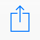

<div *ngIf="data.mobileType === 'android'" class="android-prompt">
  <button class="my-button" mat-button (click)="installPwa()">
    Добавить на главный экран
  </button>
  <button mat-icon-button (click)="close()">
    <mat-icon>close</mat-icon>
  </button>
</div>

<div *ngIf="data.mobileType === 'ios'" class="ios-prompt">
  <button class="close-ios-inv" mat-button color="primary" (click)="close()">
    <mat-icon>close</mat-icon>
  </button>
  <div>
    To install this web app on your device tap the Menu button and then 'Add to
    Home screen' button
  </div>
  <div>
    
    <mat-icon>navigate_next</mat-icon>
    
  </div>
</div>
